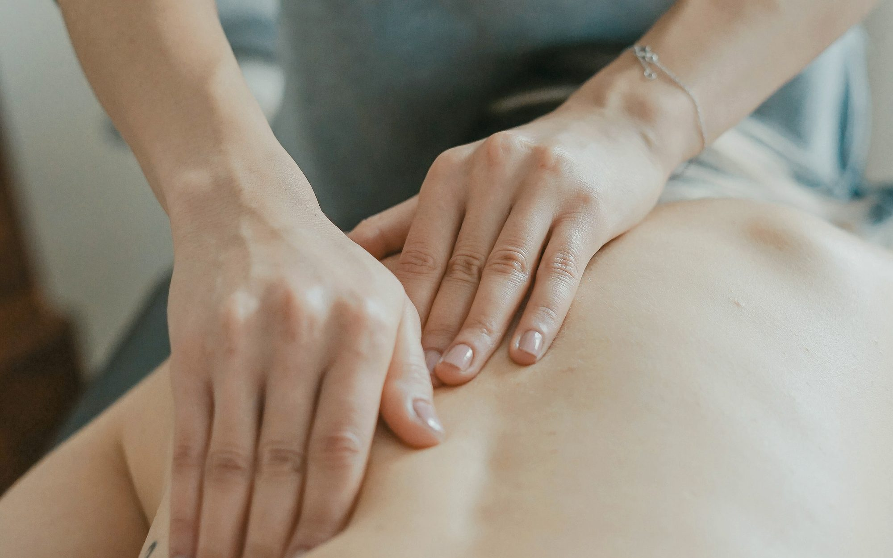

Chronische spanning
Diepe, vastgezette spanning wordt laag per laag geneutraliseerd in plaats van enkel oppervlakkig losgemaakt.

Traditionele Thaise massage · Kortenberg
Authentieke Thaise massagetherapie door Somphit Wongmak — opgeleid aan de Thai Traditional Medicine Society in Bangkok. Voor pijnlijke spieren en gewrichten, of gewoon voor diepe rust.
De behandeling
Traditionele Thaise massage maakt deel uit van de klassieke Thaise cultuur en combineert rustige yogabewegingen, acupressuur, reflexologie en stretching. U ligt gekleed op een mat — er komt geen olie aan te pas.
Met duimen, handpalmen, ellebogen, knieën en voeten wordt ritmisch druk uitgeoefend op de energielijnen van het lichaam. Somphit gebruikt daarbij haar eigen lichaamsgewicht: traag, doelgericht en altijd afgestemd op wat úw lichaam op dat moment nodig heeft.
Draag losse kleding waarin u vrij kunt bewegen.
Geen vettig gevoel, geen douche nodig achteraf.
Meer ruimte om te stretchen dan op een massagetafel.
Uw gewrichten worden zacht en gecontroleerd geopend.
Waarom mensen komen
Sommigen komen met een concrete klacht. Anderen komen om even helemaal niets te moeten. Beide zijn even welkom.
Diepe, vastgezette spanning wordt laag per laag geneutraliseerd in plaats van enkel oppervlakkig losgemaakt.
Doelgerichte druk op de spiergroepen die het meest te lijden hebben onder bureauwerk en stress.
Een behandeling die door veel mensen als verlichtend wordt ervaren bij stijve gewrichten en terugkerende hoofdpijn.
Ritmische druk en stretching stimuleren de bloedsomloop tot in de kleinste spiervezels.
Passieve yogastretches vergroten uw bewegingsvrijheid — merkbaar vanaf de eerste sessie.
Anderhalf uur zonder telefoon, zonder agenda. Voor veel mensen is dát het echte resultaat.
Behandelingen & prijzen
Elke behandeling start met een kort gesprek. Combinaties zijn altijd mogelijk — vertel gerust telefonisch waar u last van heeft.
De volledige ervaring. Eerst wordt het lichaam met Thai Yoga Massage grondig losgemaakt en gestretcht, daarna volgt de warme kruidenstempel om de spieren diep te ontspannen. Wie één behandeling per jaar doet, doet best deze.
€95
De klassieke Thaise behandeling: acupressuur op de energielijnen, gecombineerd met passieve yogastretches. Het meest doeltreffend bij stijfheid en chronische spanning.
€55 / 45 min · €75 / 90 min
Stoffen zakjes gevuld met Thaise kruiden worden verwarmd en over de spieren gerold. De warmte dringt diep door — bijzonder aangenaam in de winter en na sportbelasting.
€55
Dezelfde techniek, maar met zachtere druk en meer nadruk op ontspanning dan op behandeling. Ideaal als eerste kennismaking met Thaise massage.
€49
Perfect als aanvulling, of wanneer u weinig tijd heeft.
Combinaties zijn mogelijk. Bel gerust om samen de juiste behandeling te kiezen.
Uw bezoek
Wij werken uitsluitend op afspraak. Zo bent u de enige klant op dat moment en blijft het rustig.
Vertel kort waar u last van heeft en hoeveel tijd u heeft. Somphit stelt een geschikte behandeling voor en plant een moment in.
U wordt persoonlijk ontvangen. Voor de behandeling bespreken we uw klachten, uw gevoeligheden en de gewenste druk.
Gekleed op een mat, in een stille ruimte. Druk, tempo en stretches worden onderweg bijgestuurd — zeg gerust wat aanvoelt.
Na de massage neemt u rustig de tijd om bij te komen. Drink die dag voldoende water — dat helpt het lichaam mee opruimen.
Over Zen Thai Therapy
Bij Zen Thai Therapy wordt u persoonlijk ontvangen en behandeld door Somphit Wongmak. Geen wisselende gezichten, geen lopende band: één therapeute die uw lichaam leert kennen over de sessies heen.
Somphit leerde het vak aan de befaamde Thai Traditional Medicine Society en heeft ruim meer dan tien jaar ervaring in Thaise massagetherapie. Ze werkt vanuit een rustige praktijk in Kortenberg, waar de tijd bewust wat trager gaat.
"Elk lichaam vertelt iets anders. Mijn werk is luisteren met mijn handen."
Een therapeutische praktijk. Zen Thai Therapy biedt uitsluitend traditionele, professionele massagetherapie aan. Geen erotische massage.
De praktijk
Een rustige behandelruimte in Kortenberg, met parking voor de deur en de bus- en treinhalte op 350 meter.
Cadeaubon
Een cadeaubon voor een massagesessie naar keuze — voor een verjaardag, als bedankje, of gewoon omdat iemand het verdient. Bel om er een te reserveren.
Veelgestelde vragen
Staat uw vraag er niet bij? Bel gerust — Somphit legt het graag telefonisch uit.
Nee. Bij traditionele Thaise massage blijft u volledig gekleed en wordt er geen olie gebruikt. Draag losse, comfortabele kleding waarin u vrij kunt bewegen — een joggingbroek en T-shirt zijn ideaal.
Uitsluitend telefonisch op 0477 94 00 08, dagelijks tussen 14u en 21u. Wij werken enkel op afspraak zodat u de volle aandacht krijgt in een rustige omgeving. Zonder afspraak langskomen is helaas niet mogelijk.
De druk wordt altijd aangepast aan uw lichaam en uw wensen. Bij hardnekkige spanning kan het intens aanvoelen — zoals een goede stretch — maar nooit pijnlijk. Geef het gerust aan tijdens de behandeling; er wordt onmiddellijk bijgestuurd.
Nee. Zen Thai Therapy is een therapeutische praktijk. Wij bieden uitsluitend traditionele Thaise massage aan, uitgevoerd door een professioneel opgeleide therapeute. Vragen in die richting worden geweigerd.
Zeker. Thaise massage is geschikt voor jong en oud, en juist wie stijf is haalt er vaak het meeste uit. De stretches worden volledig aangepast aan uw bewegingsvrijheid — u hoeft zelf niets te kunnen.
Sessies duren 30 tot 90 minuten. Bij een concrete klacht werkt een reeks van enkele sessies kort na elkaar het best; daarna volstaat vaak een onderhoudssessie om de paar weken. Somphit adviseert u hierover na de eerste behandeling.
Bij zwangerschap, koorts, een recente operatie, breuken, trombose of ernstige medische aandoeningen: meld dit bij het maken van uw afspraak. In twijfelgevallen vragen wij u eerst uw arts te raadplegen. De behandeling wordt dan aangepast of uitgesteld.
Er is parkeergelegenheid ter plaatse en de bus- en treinhalte liggen op ongeveer 350 meter. Vraag bij het maken van uw afspraak gerust welke betaalmogelijkheden er zijn.
Contact & afspraak
Een afspraak maken gaat het snelst telefonisch. Zo kan Somphit meteen meedenken over de juiste behandeling.